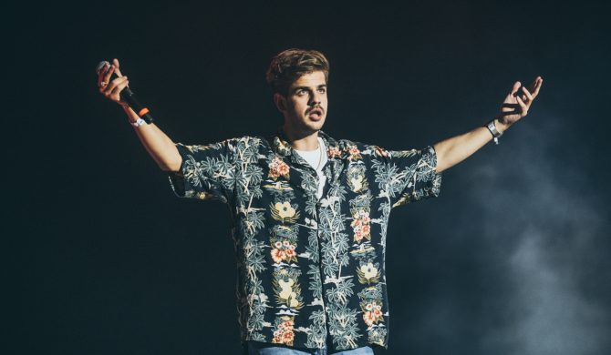
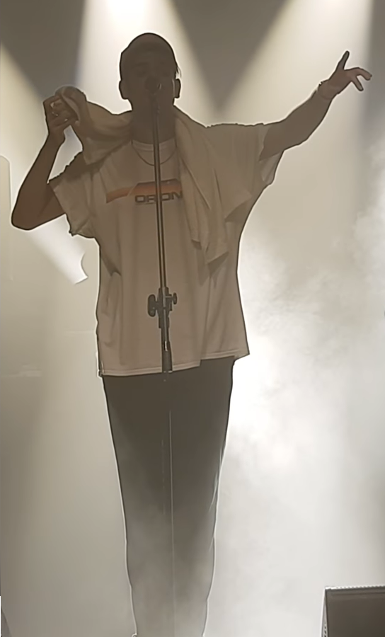
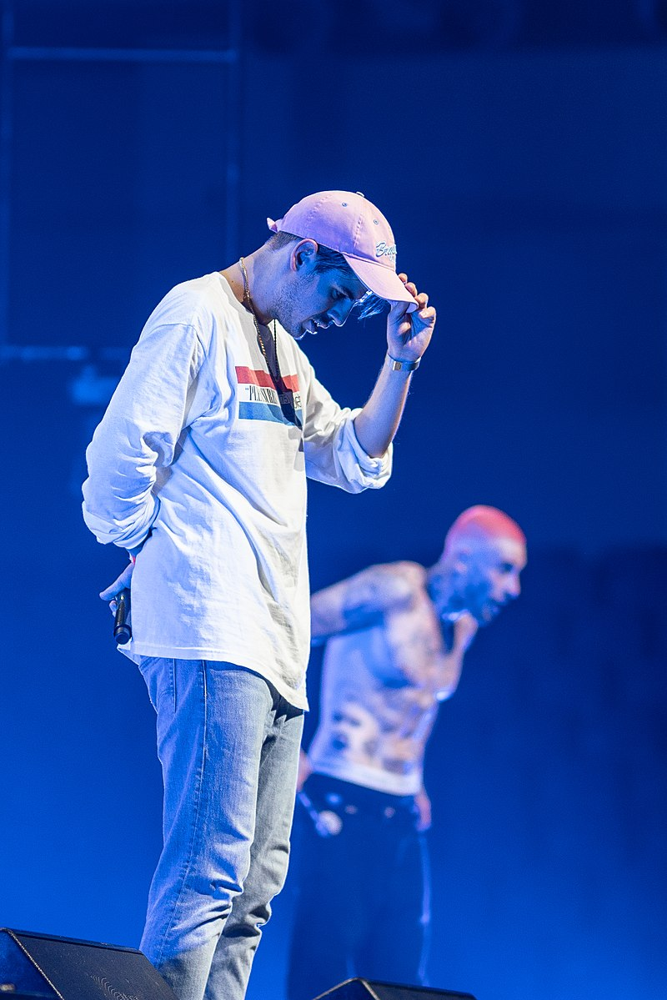

Dane ogólne
Taco Hemingway (właściwie Filip Tadeusz Szcześniak) to polski raper i autor tekstów. Urodził się 29 lipca 1990 w Kairze. Kiedy miał dwa lata, przeprowadził się wraz z rodzicami z Egiptu do Chin. Po skończeniu przedszkola, w 1996 roku przeprowadził się z rodziną do Warszawy. Jest absolwentem kulturoznawstwa na Uniwersytecie Warszawskim. W 2012 roku podjął studia na Wydziale Antropologii Uniwersytetu Londyńskiego. 
2011 - 2016
19 grudnia 2014 ukazał się, wydany nakładem własnym minialbum, zatytułowany Trójkąt warszawski . Dzień po premierze płyty artysta zagrał swój pierwszy koncert w Cafe Kulturalna w Warszawie. 6 czerwca 2015 miejsce ma premiera cyfrowa pierwszego singla pt. „6 Zer” wraz z teledyskiem, w reżyserii Łukasza Partyki oraz Jonasza Tołopiły. Singiel okazał się pierwszym większym sukcesem komercyjnym rapera i kluczem do popularności w Polsce. 27 czerwca 2015 ukazał się trzeci minialbum muzyka, zatytułowany Umowa o dzieło. Materiał został udostępniony bezpłatnie w formach cyfrowych. Nagrania Taco Hemingwaya spotkały się z zainteresowaniem Marcina „Tytusa” Grabskiego – właściciela oficyny Asfalt Records, który podpisał z raperem kontrakt wydawniczy. 19 sierpnia 2015 do sprzedaży trafiły reedycje płyt Trójkąt warszawski i Umowa o dzieło , które zyskały ogromny rozgłos, docierając odpowiednio do 3. i 2. miejsca polskiej listy przebojów – OLiS, obie sprzedając się w ilości ponad 10 tys. kopii w dniu premiery. Albumy zostały świetnie przyjęte przez słuchaczy oraz zdobyły same pozytywne opinie krytyków. Album Umowa o dzieło osiągnął do 2017 status złotej płyty. Tego samego roku wyruszył w pierwszą trasę koncertową po Polsce, pod nazwą „Następna Stacja Tour”. W tym samym roku po raz pierwszy wystąpił na Open’er Festival, na pobocznej scenie. W 2016 został laureatem najważniejszej polskiej nagrody muzycznej – Fryderyka, za album Umowa o dzieło w kategorii Album roku Hip-Hop. 5 lipca 2016 wydał singiel „Deszcz na betonie”, który zapowiadał album Marmur .
2016 - 2017
W lutym 2016 zaczął pisać teksty na swój pierwszy album studyjny. W 2016 bez zapowiedzi ukazał się czwarty minialbum rapera pt. Wosk . Utwór z albumu, pt. „Wiatr”, stał się największym przebojem z płyty osiągając prawie 10 milionów wyświetleń w serwisie YouTube.  2 listopada wydał pierwszy album studyjny, zatytułowany Marmur , który trafił do sprzedaży 2 grudnia. Płyta zadebiutowała kolejno na 3. miejscu polskiej listy przebojów – OLiS. Album uzyskał pozytywne oceny krytyków. Do lutego 2017 sprzedano ponad 15 000 kopii albumu Marmur, który uzyskał status złotej płyty. Tego samego roku raper wyruszył w drugą trasę koncertową Marmur Tour. W 2017 po raz kolejny został nominowany do nagrody Fryderyka za album Marmur, w kategorii Album roku Hip-Hop, przegrał jednak z płytą "Życie po śmierci", rapera O.S.T.R. W 2017 raper po raz drugi wystąpił na Open’er Festival, tym razem na głównej scenie. W lipcu 2017 zapowiedział nowy mini album. 30 lipca 2017 ukazał się singiel pt. „Nostalgia”, oraz cyfrowo jego nowy minialbum pt. Szprycer , który w wersji fizycznej miał premierę 25 sierpnia. Płyta zadebiutowała na 1. miejscu polskiej listy przebojów. Raper zmienił stylistykę na albumie, przez co został słabo przyjęty przez środowisko oraz krytyków. Po premierze płyty raper wyruszył w trasę koncertową Szprycer Tour, podczas której zagrał koncerty w 13 miastach sprzedając łącznie ponad 23 tys. biletów. Zwieńczeniem trasy był występ w warszawskim Torwarze, gdzie raper wypełnił całą halę ponad 6 tysiącami osób. 6 marca 2018 płyta Szprycer została nominowana do nagrody Fryderyka w kategorii Album roku hip-hop i wygrała plebiscyt. Do marca 2018 płyta sprzedała się w ponad 30 tys. kopii, zdobywając status platynowej.
2018 do teraz
W marcu 2018 raper ogłosił, że nagra wspólną płytę z Quebonafide. 16 marca 2018 ukazał się pierwszy singiel duetu Taconafide pt. „Art-B”. Raperzy zapowiedzieli wspólną, ogólnopolską trasę koncertową promującą płytę pt. Ekodiesel Tour. Raperzy w dwa tygodnie wyprzedali bilety na koncert w Torwarze oraz w szybkim tempie wyprzedali resztę koncertów na wielkich halach w Polsce. Jest to największy sukces komercyjny dotyczący koncertów w historii polskiego rapu.  22 marca 2018 artyści wydali drugi singiel pt. „Tamagotchi”. Piosenka okazała się wielkim sukcesem komercyjnym docierając do 22. miejsca listy najlepiej sprzedających się singli w Polsce. Utwór okazał się wielkim przebojem radiowym, trafiając na szczyty listy przebojów w wielu rozgłośniach, m.in. radiu Eska, Radiu Szczecin, Radiu Trójka czy RMF FM. 27 marca zostały ujawnione dodatki do edycji limitowanej oraz zagadkowe grafiki zapowiadające gościnne występy na albumie. 1 kwietnia 2018 na instagramowym koncie Taconafide pojawiła się cała tracklista albumu, zatytułowanego Soma 0,5 mg , a także materiału bonusowego o nazwie Soma 0,25 mg . Ujawniono również producentów oraz gości na dodatkowym CD. Singiel Tamagotchi ustanowił również rekord na Spotify jako najczęściej słuchany utwór w przeciągu tygodnia, osiągając 1 797 617 odsłuchów (wcześniej rekord należał do Eda Sheerana z wynikiem 767 383 odtworzeń). 4 kwietnia 2018 ukazał się kolejny singiel pt. „Metallica 808” na kanale Taco Hemingway'a. 9 kwietnia 2018 premierę ma czwarty singiel pt. „Kryptowaluty”. 13 kwietnia 2018 miała miejsce premiera całej płyty Soma 0,5 mg, która w całości została opublikowana na youtubowych kanałach Taco Hemingway'a i QueQuality oraz na serwisach streamingowych. Płyta trafiła na pierwsze Top 15 w serwisie Spotify. Album zadebiutował na 1. miejscu polskiej listy przebojów – OLiS, sprzedając się w ponad 30 tys. egzemplarzy zdobywając tym samym status platynowej płyty. 4 lipca 2018 roku albumowi przyznano status podwójnej platynowej płyty, za sprzedaż 60 tys. egzemplarzy. Płyta była również najlepiej sprzedającym się krążkiem pierwszego półrocza w Polsce. 6 lipca Taco Hemingway trzeci raz wystąpił na Open’er Festival w Gdyni tym razem z raperem Quebonafide, jako Taconafide. Według medialnych relacji, raperzy zgromadzili kilkudziesięciotysięczną publiczność, porównywalną z największymi gwiazdami wieczoru, zespołem Gorillaz, a zarazem największą spośród polskich wykonawców w historii Open’era. Drugi studyjny album artysty zatytułowany Café Belga , został wydany bez zapowiedzi 13 lipca 2018. Muzyk po raz kolejny zadebiutował z płytą na 1. miejscu polskiej listy przebojów. Album dwa tygodnie po premierze otrzymał status złotej płyty.